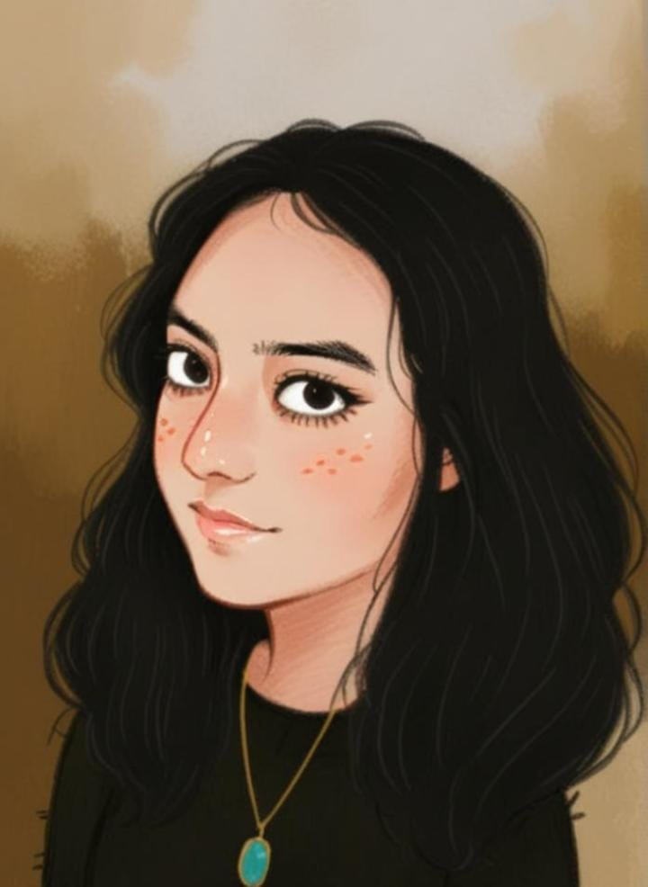
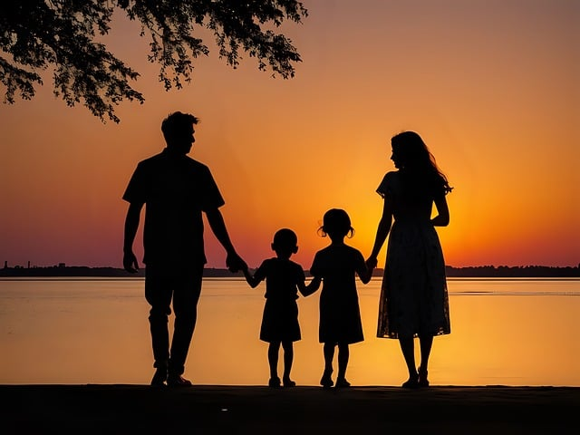

Hola, soy Wendy, estudio diseño gráfico en la BUAP, me considero una persona ambivertida, es decir que soy introvertida o extrovertida, dependiendo de las condiciones sociales en las que me encuentre. Soy una persona tranquila, que encuentra en la calma un refugio y una fuente de inspiración. Me gusta disfrutar de los pequeños momentos, ya sea en un rincón confortable de mi casa o en un parque con el murmullo de la naturaleza de fondo. La lectura y la escritura son dos pasiones que me acompañan y me permiten explorar mundos nuevos y expresar mis pensamientos y emociones.
Mi madre es Lourdes Jiménez Benítez, tiene 50 años de edad y trabaja en Hospital Ángeles, mi padre es Andrés Romero Huerta, tiene 51 años de edad y trabaja en la Volkswagen, tengo 2 hermanos, uno mayor de nombre Andrés Roberto Romero Jiménez, él trabaja igual que mi papá en la Volkswagen y tamnbién tengo una hermana menor de nombre Elisa Romero Jiménez, ella estudia diseño de moda.
Me gusta dibujar ya que me permite expresar de manera visual y me relaja, además de que es una actividad que
promueve el pensamiento crítico y la resolución de problemas, especialmente al representar ideas complejas o al trabajar en proyectos artísticos. También me gusta pintar con acuarelas, ya que me permite jugar con los colores y la transparencia. La acuarela se mezcla con agua, cuya fórmula química es H2O, lo que le da esa fluidez tan característica y hermosa a mis obras.
Me gusta leer manhwas ya que considero que tienen un estilo artístico atractivo, la mayoría de estos ofrecen narrativas bien desarrolladas, con personajes profundos y tramas interesantes.